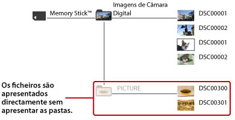
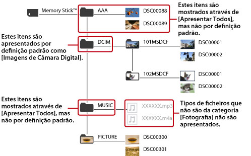

Sobre o menu XMB™ > Alterar a forma de apresentação do conteúdo
Alterar a forma de apresentação do conteúdo
O conteúdo guardado nas seguintes pastas ao nível do directório de raiz dos suportes de armazenamento ou dispositivos de armazenamento em massa USB é apresentado por definição.
| Categoria | Nome da Pasta | |
|---|---|---|
 |
(Vídeo) | VIDEO |
 |
(Música) | MUSIC |
 |
(Fotografia) |
|
| * |
Esta pasta serve para armazenar imagens gravadas em formato DCF, quando tirar fotografias com uma câmara digital. |
|---|
Seleccione o ícone do suporte de armazenamento ou do dispositivo de armazenamento em massa USB e, em seguida, prima o botão  . Seleccione [Apresentar Todos] no menu das opções para apresentar pastas adicionais àquelas listadas anteriormente.
. Seleccione [Apresentar Todos] no menu das opções para apresentar pastas adicionais àquelas listadas anteriormente.
Exemplo de conteúdo apresentado por definição
Com o Memory Stick™ seleccionado em (Fotografia):

Exemplo de conteúdo apresentado em [Apresentar Todos]
Com o Memory Stick™ seleccionado em (Fotografia):

Notas
- Só o conteúdo passível de ser reproduzido na categoria seleccionada será apresentado em [Apresentar Todos]. Nem todo o conteúdo armazenado nos suportes pode ser apresentado.
- Todas as pastas são apresentadas por definição quando reproduz discos de dados como CD-Rs.
- Em alguns modelos do sistema PS3™, é necessário um adaptador USB apropriado (não incluído) para usar suportes de armazenamento.